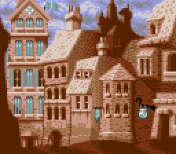

Exploring the Dungeons of Avalon analyzes the executable, data
files and history of
the 1992 Commodore Amiga roleplaying game series Dungeons of Avalon.
Read more
about this project.

The city H'Khan
{% assign sortedPosts = site.posts | sort: 'slug' %}
History
{% for post in sortedPosts %}
{% if post.categories contains "history" %}
- {{ post.title }}
{% endif %}
{% endfor %}
Maps
- The Dungeon (DoA1):
Level 1,
Level 2,
Level 3,
Level 4,
Level 5
- Rhateph's Castle (DoA1):
Level 1,
Level 2,
Level 3,
Level 4
- Dungeon of Isla (DoA2):
Level 1,
Level 2,
Level 3,
Level 4,
Level 5
- Tower of Roa (DoA2):
Level 1,
Level 2,
Level 3,
Level B1,
Level B2
Secrets
{% for post in sortedPosts %}
{% if post.categories contains "secrets" %}
- {{ post.title }}
{% endif %}
{% endfor %}
Game mechanics
{% for post in sortedPosts %}
{% if post.categories contains "game" %}
- {{ post.title }}
{% endif %}
{% endfor %}
Lore
{% for post in sortedPosts %}
{% if post.categories contains "lore" %}
- {{ post.title }}
{% endif %}
{% endfor %}
Data
{% for post in sortedPosts %}
{% if post.categories contains "data" %}
- {{ post.title }}
{% endif %}
{% endfor %}
- Annotated disassembly (m68k, ~539 KB)
Links
- Amiga Fun magazines with Dungeons of Avalon
cover art:
May 1992 (DoA1),
Oct 1992 (DoA2)
- The CRPG Addict's Dungeons of Avalon playthrough:
part 1,
part 2,
part 3,
part 4
- The CRPG Addict's Dungeons of Avalon II playthrough:
part 1,
part 2
- Lemon Amiga:
Dungeons of Avalon,
Dungeons of Avalon II
- Hall of Light:
Dungeons of Avalon,
Dungeons of Avalon II
- Exploring K240